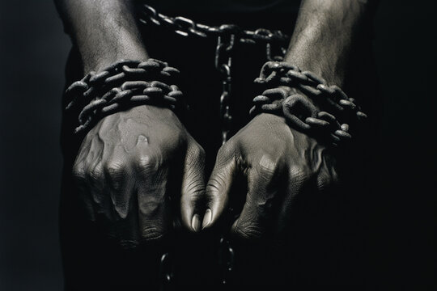

The prisoners are chained so they can only face one direction, the wall in front of them. The chains represent ignorance and the limits that come from habit, upbringing, and lack of curiosity. They aren't locked in by force alone; they've simply never been given a reason to turn around.
Back to map